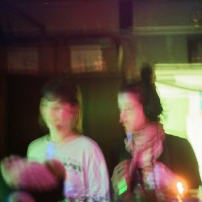

Latest articles
Recommending: Salute to the Sun
MUSIC

“Salute to the Sun” is the kind of album that calms your body instantly (or at least mine), it’s smooth, delicate and somehow gives the feeling that it goes in-depth into the music. Listen to the conversation taking place between the different instruments and see where it takes you...
Recommending: Denisse Ariana Perez
PHOTOGRAPHY

The exploration of the human body and of its representation. Young or old, hairy or wrinkly, under the sun or underwater but always soft and safe, this is what the pictures of Denisse Ariana Perez are about. What the human body is for real...
A selection of French rap video clips
MUSIC
As the Francophone rap scene keeps evolving and diversifying, different rapers are putting more focus on the visuals that accompany their music in their video clips. Here is a selection of 5 French rap video clips that are worth checking out...
A conversation with Beya Panicha
ILLUSTRATION

As I was reading through the last edition of Gaze Magazine (features works of many talented women, definitely recommend), I came across the work of Beya Panicha, an illustrator and painter from Thailand. Vibrant colors and grainy textures, Beya's universe feels like she...